&
Déconnexion au réseau : Debian, et Xfce.
Les périphériques réseaux et les connexions réseaux sont gérés ici, par
NetworkManager.
(voir aussi wiki.debian)
Exemple : Internet, Wifi...
Lors de l'installation, la connexion réseau est paramétrée automatiquement en suivant ce site.
l'icône : Réseau désactivé ou aucune connexion réseau
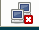
Ou l'icône : Cherche à se connecter au réseau
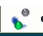
Ou l'icône : Connexion au réseau Ethernet active
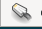
Ou l'icône : Connexion au réseau wi-fi active
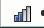
Plusieurs points sont à distinguer :
Dans cet exemple, le PC est connecté par un câble à un réseau (à la box) et seule la connexion Ethernet est disponible.
Tableau de bord 1 du bureau xfce, celui du haut.
Avec l'icône : Connexion au réseau Ethernet active

Déconnexion au réseau
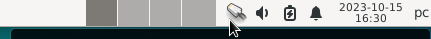
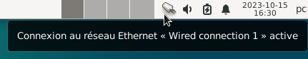
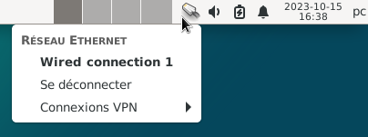
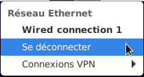
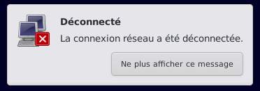
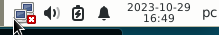
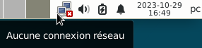
Si besoin, se rendre au chapitre : Les périphériques réseaux (Internet)

Informations sur le logiciel libre et Merci.
Marques déposées :
Ce site ne fait pas partie de Debian, n'est pas produit par le projet
Debian, ni approuvé par le projet Debian.
Ce site n'est pas affilié à Debian. Debian est une marque déposée appartenant
à Software in the Public Interest, Inc.
Contribuer :
Ce site ne fait pas partie de XFCE, n'est pas produit par le projet
XFCE, ni approuvé par le projet XFCE.
Ce site n'est pas affilié à XFCE.
Ce site est juste réalisé par un passionné.